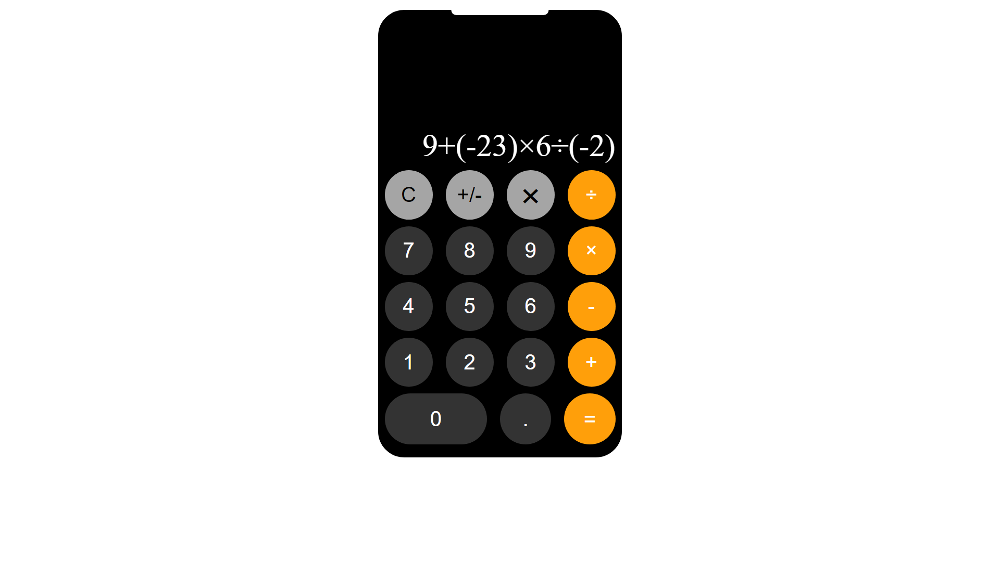
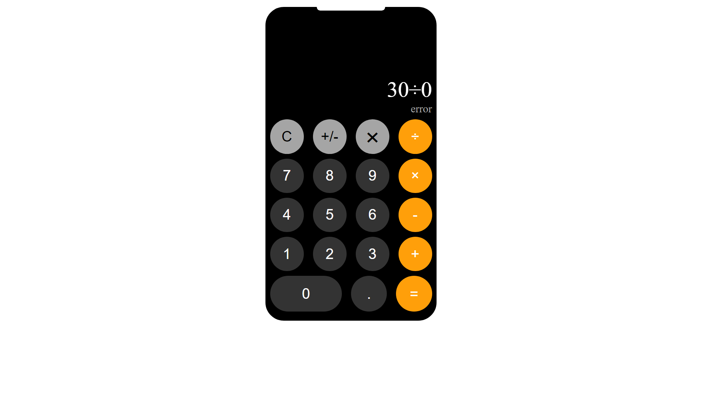

My Calc
Overview
Welcome to My Calc! This project is a feature-rich calculator interface with a modern design. Enjoy a smooth and interactive calculation experience with this stylish application.
Project Structure
- Source Code: My!Calc.com
- View Live: My Calc
- Description: A fully functional calculator with basic arithmetic operations, error handling, and interactive button design.
- Languages: HTML, CSS, JavaScript
Contents
- HTML Structure
- Provides the basic structure of the calculator interface.
- Includes elements such as display, buttons, and design features.
- CSS Styling
- Styles the calculator with a modern and clean design.
- Utilizes flexbox for layout and custom colors for buttons and background.
- JavaScript Functionality
- Implements core calculator functions including arithmetic operations, error handling, and special functions like plus/minus and backspace.
- Uses event listeners for interactive button presses.
Note: This project offers a practical approach to managing DOM elements and events using JavaScript. You can explore how different event listeners are used to achieve dynamic and responsive interactions.
Output Screenshots


How to Use
- Clone the repository:
git clone https://github.com/RahulP-Here/my-web-dev-evolution.git
- Open index.html in a web browser to use the calculator.
Feel free to explore the calculator's features and interactive elements. Experiment with various operations and error handling to see how the application responds.